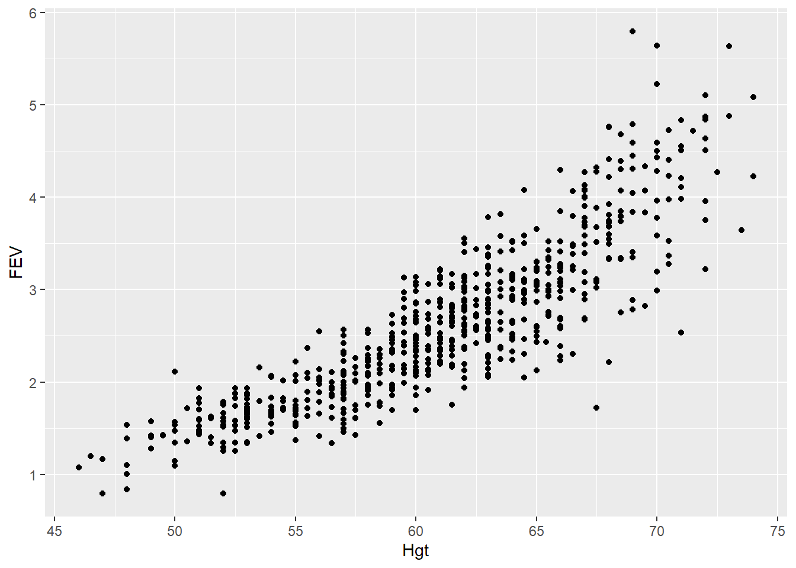
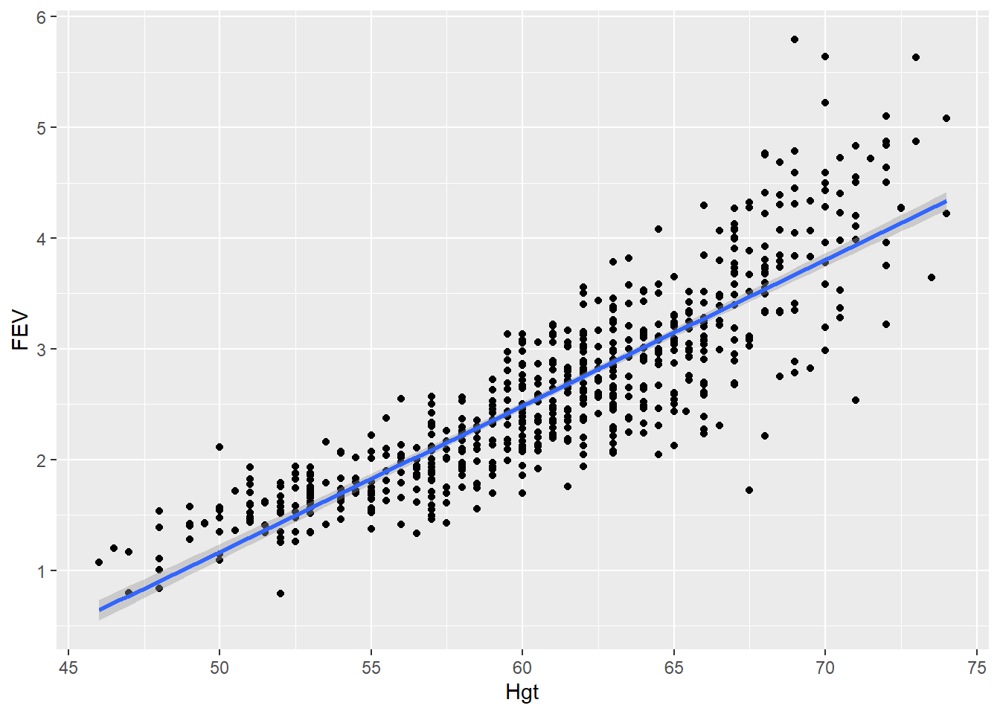
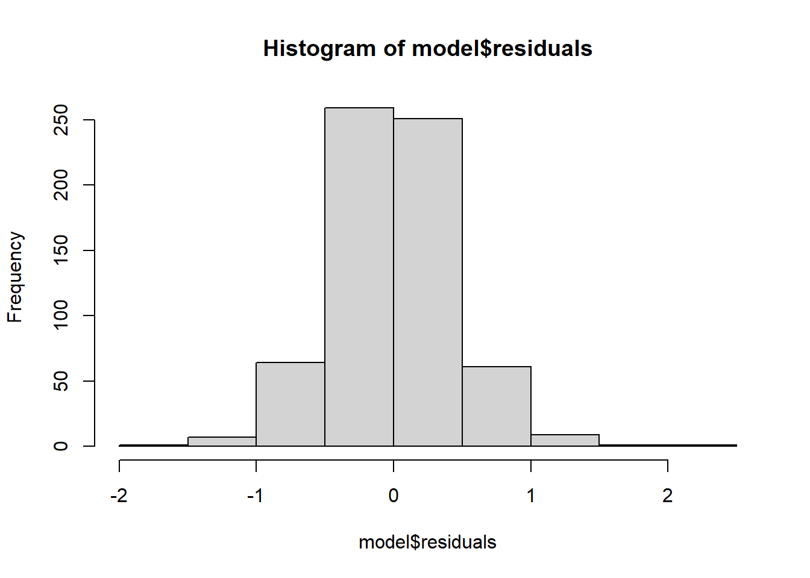
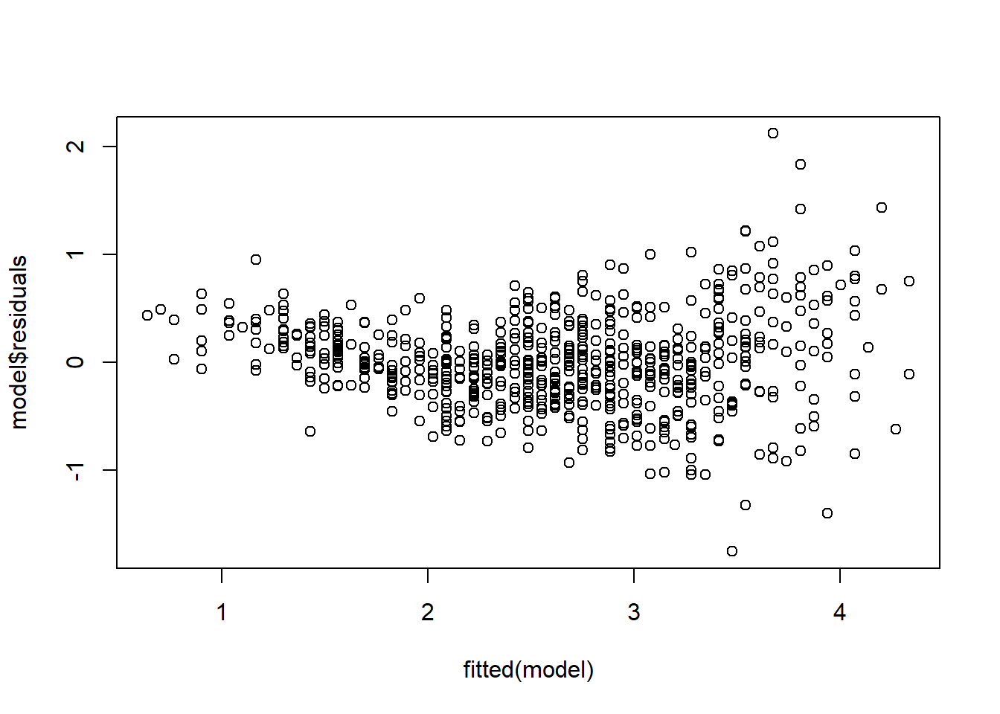
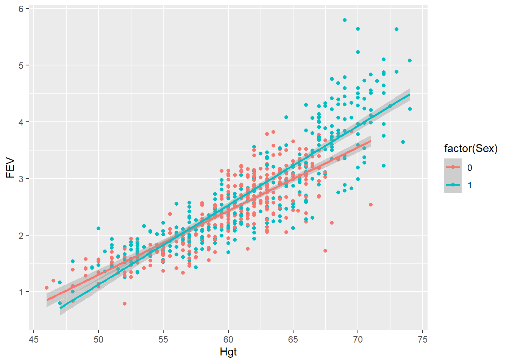

Ingen har givet os data. Så her er noget data på lungevolumen hos børn/unge i alderen 3-19, både rygere og ikke rygere, og af begge køn. Højden har vi også. Højde er i tommer. Volumen tror vi nok er i liter.
fev <-read_csv("data/fev.csv")
Rows: 654 Columns: 6
── Column specification ────────────────────────────────────────────────────────
Delimiter: ","
dbl (6): Id, Age, FEV, Hgt, Sex, Smoke
ℹ Use `spec()` to retrieve the full column specification for this data.
ℹ Specify the column types or set `show_col_types = FALSE` to quiet this message.
summary(fev)
Id Age FEV Hgt
Min. : 201 Min. : 3.000 Min. :0.791 Min. :46.00
1st Qu.:15811 1st Qu.: 8.000 1st Qu.:1.981 1st Qu.:57.00
Median :36071 Median :10.000 Median :2.547 Median :61.50
Mean :37170 Mean : 9.931 Mean :2.637 Mean :61.14
3rd Qu.:53639 3rd Qu.:12.000 3rd Qu.:3.119 3rd Qu.:65.50
Max. :90001 Max. :19.000 Max. :5.793 Max. :74.00
Sex Smoke
Min. :0.0000 Min. :0.00000
1st Qu.:0.0000 1st Qu.:0.00000
Median :1.0000 Median :0.00000
Mean :0.5138 Mean :0.09939
3rd Qu.:1.0000 3rd Qu.:0.00000
Max. :1.0000 Max. :1.00000
scatterplot analysis
Vi ved ikke helt hvad en “scatterplot analysis” er. Men her er et scatterplot:
fev %>%ggplot(aes(x=Hgt, y = FEV)) +geom_point()

Det får os til at tro at der måske er en lineær sammenhæng mellem højde og lungevolumen.
En ret linie
ggplot kan lave det direkte. Men husk at sætte “method” i geom_smooth:
fev %>%ggplot(aes(x=Hgt, y = FEV)) +geom_point() +geom_smooth(method ="lm")
`geom_smooth()` using formula = 'y ~ x'

Sådan en linie har en ligning
\[y = ax + b\]
Or:
\[FEV = aHgt + b\] a er hældningen (slope). b is the intercept between the line and the y-axis.
Read the formula as: FEV is a function of Hgt. Hgt is the independent variabel. FEV the dependent. But this is not a statistics course, you can read about that in your textbook. Intercept is -5.433. Try to guess what value the slope has.
What else:
summary(model)
Call:
lm(formula = FEV ~ Hgt, data = fev)
Residuals:
Min 1Q Median 3Q Max
-1.75167 -0.26619 -0.00401 0.24474 2.11936
Coefficients:
Estimate Std. Error t value Pr(>|t|)
(Intercept) -5.432679 0.181460 -29.94 <2e-16 ***
Hgt 0.131976 0.002955 44.66 <2e-16 ***
---
Signif. codes: 0 '***' 0.001 '**' 0.01 '*' 0.05 '.' 0.1 ' ' 1
Residual standard error: 0.4307 on 652 degrees of freedom
Multiple R-squared: 0.7537, Adjusted R-squared: 0.7533
F-statistic: 1995 on 1 and 652 DF, p-value: < 2.2e-16
Here we get the p-values of the estimates of intercept and slope, handily coded with *** to indicate different levels of significance \(\alpha\).
We also get a \(R^2\) value describing the propotion of the variability of the data described by the model.
In general it is a good idea to take a look at the residuals:
hist(model$residuals)

The residuals should be normal distributed (one of the assumptions of the linear regression, but we assume that has been covered in the textbook).
Also take a look at the actual residuals, comparing the predicted values with the residuals:
plot(fitted(model), model$residuals)

If there is a pattern in the residuals it is an indication that there is more signal in the data than we found with the model. Here it looks like there is something happening in the higher end of FEV - the dispersion of the values is qualitatively different in the two ends of the fit.
Maybe that dispersion at the end is due to Sex?
We can make the previous plot, just colored by Sex (Sex is recorded as 0’s and 1’s). We need to coeerce Sex to a categorical variable using factor()
fev %>%ggplot(aes(x=Hgt, y = FEV, color =factor(Sex))) +geom_point() +geom_smooth(method ="lm")
`geom_smooth()` using formula = 'y ~ x'

data <- fev %>%mutate(Sex =factor(Sex))lm(FEV ~ Hgt:factor(Sex), data = data) %>%summary()
Call:
lm(formula = FEV ~ Hgt:factor(Sex), data = data)
Residuals:
Min 1Q Median 3Q Max
-1.65823 -0.25382 -0.00092 0.23908 2.06207
Coefficients:
Estimate Std. Error t value Pr(>|t|)
(Intercept) -5.297940 0.182310 -29.06 <2e-16 ***
Hgt:factor(Sex)0 0.128595 0.003035 42.38 <2e-16 ***
Hgt:factor(Sex)1 0.130853 0.002933 44.62 <2e-16 ***
---
Signif. codes: 0 '***' 0.001 '**' 0.01 '*' 0.05 '.' 0.1 ' ' 1
Residual standard error: 0.4256 on 651 degrees of freedom
Multiple R-squared: 0.7598, Adjusted R-squared: 0.7591
F-statistic: 1030 on 2 and 651 DF, p-value: < 2.2e-16
myprobit <-glm(admit ~ gre + gpa + rank, family =binomial(link ="probit"), data = mydata)mylogit <-glm(admit ~ gre + gpa + rank, family =binomial(link ="logit"), data = mydata)
myprobit
Call: glm(formula = admit ~ gre + gpa + rank, family = binomial(link = "probit"),
data = mydata)
Coefficients:
(Intercept) gre gpa rank2 rank3 rank4
-2.386836 0.001376 0.477730 -0.415399 -0.812138 -0.935899
Degrees of Freedom: 399 Total (i.e. Null); 394 Residual
Null Deviance: 500
Residual Deviance: 458.4 AIC: 470.4
mylogit
Call: glm(formula = admit ~ gre + gpa + rank, family = binomial(link = "logit"),
data = mydata)
Coefficients:
(Intercept) gre gpa rank2 rank3 rank4
-3.989979 0.002264 0.804038 -0.675443 -1.340204 -1.551464
Degrees of Freedom: 399 Total (i.e. Null); 394 Residual
Null Deviance: 500
Residual Deviance: 458.5 AIC: 470.5